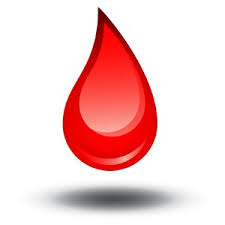

FAQs
WHY DONATE BLOOD?
Blood transfusions save the lives of patients under medical treatment.
Blood is essential for life and is required during medical emergencies and surgeries.
Premature infants come into the world often needing blood to survive.
1out of 3 people you know will need blood in their lifetime.
1unit of blood can save up to 3 lives.
From natural disasters to chronic diseases, the demand for blood is constant.
WHO CAN DONATE BLOOD?
Someone who meets the following criteria:
A person in good health in the age bracket of 18years to 60 years.
Weighs at least 45 Kgs.
Has not donated blood in the last 3 months.
Off antibiotics for 24 hours.
Symptom free for at least 3 days following a cold, cough or flu.
Important: If you are receiving medical treatment, please consult your doctor before donating blood.
WHO CANNOT DONATE BLOOD?
Anyone that has one or more of the following conditions:
Low haemoglobin
Cold, flu, High Blood Pressure, or other illness symptoms.
Medical conditions that may prevent you from donating.
Pregnant Women.
STD, HIV, and Zika virus exposure.
PHYSICAL CHECK-UP PRIOR TO DONATION?
Your pulse, blood pressure, temperature, and hemoglobin will be checked.
HOW LONG IS THE PROCESS?
The whole process takes around 30 minutes, but the actual donation takes about 10 minutes only.
HOW MUCH TIME FOR THE BODY TO RECOUP?
The fluids will adjust within a few hours of your donation.
The red blood cells will be replaced within a few weeks.
Platelets will be replaced within 24 hours.
HOW TO PREPARE FOR BLOOD DONATION?
Drink plenty of water.
Have a healthy meal before you donate.
Avoid fatty foods.
Wear clothing with sleeves that can be raised above the elbow.
Bring a valid identification with you.
Bring a list of any medications you are currently taking.
WHAT TO DO AFTER DONATING BLOOD?
Drink plenty of water or juice with other supplements.
Eat healthy meals consisting of iron-rich foods.
You may take an iron supplement after consulting with your doctor.
Avoid lifting or exercising for 24 hours.
Avoid physical activities following the donation.
If you feel dizzy, lie down and raise your feet until the feeling passes.